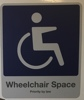
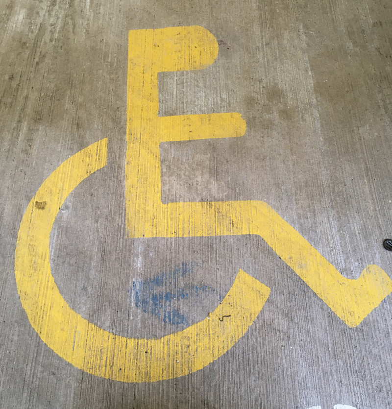
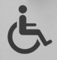
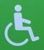
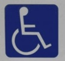
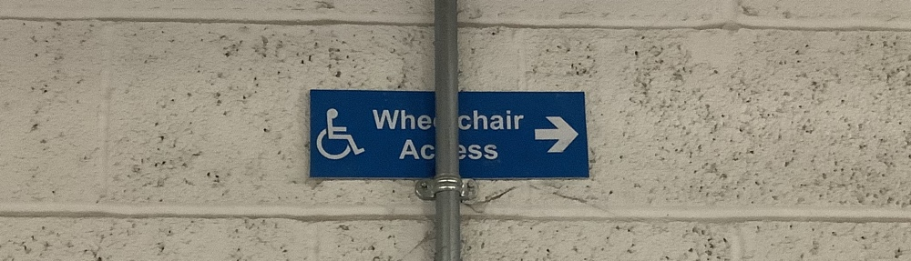

Exploration through automation to develop an understanding of Disability, the context within which it is presented in society and to reclaim the symbol in a form that better reflects my complex relationship and identity
as someone who experiences Disability.
Using automated drawing machines and algorithmic simulations of growth to recreate new forms of the disability icon.
The automation allowing exploration of a vast space of work, and centred on human reflection in finding interesting relationships between the symbol's meaning
and aesthetic. Heavily influenced by Vera Molnár's approach to automated drawing: http://www.veramolnar.com/
The project was inspired by the presentation and contexts of the Disability icon that delimit the spaces I move through.
Wheelchair symbols
Leaning back
High arm position
Unusal head shape
Thin arm and low position
Downward arm position
Thin lines
For something that is so important in enabling one to participant in society I feel the way the symbol is presented often reflects a lack of care or thought.
This lack of thought often typifies design that creates Disability and a society through its behaviours and legislation that normalises it.

It also promotes stereotypes of inactivity and disability,
something which the Accessible Icon project (http://accessibleicon.org) has explored. By finding new representations we can reframe how disability is seen.
Pictures generated through algorithms were drawn using a pen plotter, an automated drawing machine. This slowed down the automative process, leaving more time to reflect and think on the work.
It also fits with my practice of using automation and programming to enable forms of expression that are difficult physically for me to perform.
Axidraw pen-plotter drawing with a red pen.
Pen plotter drawing with a black pen over 3 hours, drawing a wheelchair built out of scaffolding.
Restricted & constricted growth.
Constrictive design creates disability that limits growth and engagement in society.
Disability as a Social construction. Scaffolding as material.
Barriers
Fractured spaces. The UK’s laws and policies on disability and the built environment, fractured, inconsistent and not enforced.
Space to move.
When your path through public space is blocked your visibility in society is lost.
Veins, light growth
Veins, medium growth
Veins, heavy growth
Chair and body. Exploring the relationship of the chair to the body and person.
Grown
Body.
The wheelchair is artificial, I see and feel it as an extension of my body, sometimes as my body. What is body and what is not body? Natural and artificial blur.
Our systems & laws are responsible for creating the disability we experience.
Angles of activity.
A visual study of activity through arm position and wheelchair. What activity does the arm suggest? How much does the chair play in that conclusion? How might the symbol feel different if it was not in the static arm position.
Grains of sand.
Grains of sand, visibility being lost.
Arms held out. The start of a question about the meaning and symbolism of arm position.
Nerves and pain.
Societies that create disability. Invisible obstacles and design that hide in our cities enforcing barriers. If we do not see it, there is no thought to change it.
Construction.
If disability is a social construct, what does it look like? What attitudes, policies, laws and societies shape it. Inconsistent design, adhoc modifications, lack of thought?
The strength & toughness of disability.
Modelled on the growth of a spiders web
Organic shapes created through applying Differential growth to the ♿️ icon.
Organic growths, influenced by a heightened sense of the invisible and having to wash your wheelchair every time you wash your hands.
Exploring a sense of freedom, activity and motion, often seen wrongly as a contradiction to disability.
Wheelchairs in motion
The layering of micro-aggressions of access
The layering of micro-aggressions of access and the increase in effect
The layering of micro-aggressions
The effort of having to ask for access
The effort of having to ask for access
Stairs & drops. Design that creates disability.
Slopes
Deconstruction & reconstruction.
Deconstruction & reconstruction.
Shards. Exploring the creation of disability as a social construct. Built out of broken design that cuts.